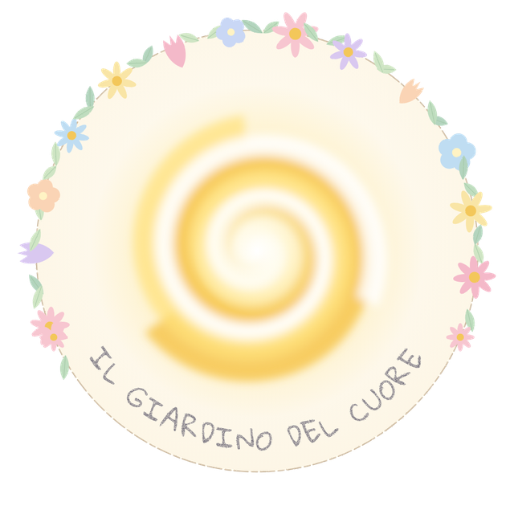

AmoreLove
che non pretende, ma accogliethat does not demand, but welcomes

«Everyone is a masterpiece not yet completed»
— SHAMS TABRIZI
Un cerchio d'amore tra terra e cielo. Meditiamo, ci ascoltiamo, serviamo — e abbiamo creato un'app per coltivare la vita interiore ogni giorno. A circle of love between earth and sky. We meditate, we listen, we serve — and we made an app to tend the inner life every day.
Siamo camminatori di luce, seminatori di bellezza,
cercatori di una verità che si rivela nei volti, nei gesti, nei silenzi.
Non un'associazione, ma un campo aperto.
Non un programma, ma un battito.
Non un progetto, ma un abbraccio.
Siamo canali, vasi, ponti, porte delle stelle — strumenti d'amore che uniscono chi ha troppo e chi non ha nulla, chi ha ferite da curare e chi ha mani per prendersene cura.
We are walkers of light, sowers of beauty,
seekers of a truth that reveals itself in faces, in gestures, in silences.
Not an association, but an open field.
Not a program, but a heartbeat.
Not a project, but an embrace.
We are channels, vessels, bridges, stargates — instruments of love that unite those who have too much and those who have nothing, those with wounds to heal and those with hands to care.
È per la Sua misericordia che ha fatto per voi la notte e il giorno, perché in essa riposiate e cerchiate la Sua grazia, e perché siate riconoscenti. It is out of His/Her Compassion that He/She has made for you night and day – that you may rest within it, and that you may seek His/Her Grace, and so that you might be grateful. Corano 28:73Quran 28:73
che non pretende, ma accogliethat does not demand, but welcomes
che non omologa, ma abbracciathat does not conform, but embraces
che non decora, ma rivelathat does not decorate, but reveals
Non abbiamo una sola religione, ma un solo amore. Beviamo alle sorgenti di: We do not have one single religion, but one single love. We drink from the sources of:
Crediamo che la verità abiti nel cuore di chi ama. We believe that truth dwells in the heart of those who love.
Il Tao è la grande madre: vuoto eppure inesauribile, genera mondi infiniti. È sempre presente dentro di te. Puoi usarlo come desideri. The Tao is the great mother: empty yet inexhaustible, it gives birth to infinite worlds. It is always present within you. You can use it any way you wish. Tao Te Ching, capitolo 6Tao Te Ching, Chapter 6
Perché parlare di gioia delirante? No, questa espressione non è esatta. È piuttosto la pace calma e serena del navigante quando scorge il faro che lo guiderà al porto: un faro luminoso d'amore. Why speak of delirious joy? No, that expression is not accurate. It is rather the calm and serene peace of the sailor when he sights the lighthouse that will guide him to the harbor, a radiant lighthouse of love. Teresa di LisieuxTeresa of Lisieux
Vogliamo riportare il cuore al centro: il nostro cuore, il cuore dei bambini dimenticati, delle donne invisibili, dei migranti esclusi.
Non offriamo solo aiuti, ma spazi di rinascita. Non parliamo solo di Dio, ma cerchiamo il Suo volto in ogni essere umano. Non costruiamo strutture, ma coltiviamo relazioni.
We want to bring the heart back to the center: our heart, the heart of forgotten children, invisible women, excluded migrants.
We don't just offer aid, but spaces of rebirth. We don't just speak of God, but seek His face in every human being. We don't build structures, but cultivate relationships.
Pratichiamo la meditazione, l'ascolto profondo e il linguaggio condiviso delle emozioni. Impariamo a respirare insieme, a farci testimoni gli uni degli altri e a crescere — in libertà, consapevolezza e compassione.
We practice meditation, deep listening, and the shared language of emotions. We learn to breathe together, to witness one another, and to grow—in freedom, awareness, and compassion.
Coltiviamo legami che guariscono: accompagnamento, studio e sostegno reciproco, che rafforzano le radici interiori e invitano a un'appartenenza autentica.
We nurture bonds that heal: mentoring, study, and peer support that strengthen inner roots and invite genuine belonging.
La nostra spiritualità diventa servizio. Ideiamo e sosteniamo progetti che offrono un aiuto reale e rispettoso, con la dignità al centro.
Our spirituality becomes service. We design and join projects that offer real, respectful help—placing dignity at the center.
Cerca di vedere un tesoro in ognuno. Ognuno è un capolavoro non ancora compiuto. Try to see a treasure in everyone. Everyone is a masterpiece not yet completed. Shams Tabrizi
Il giardino in tasca: un momento di silenzio ogni giorno, e la comunità sempre vicina. Senza pubblicità, senza tracciamento. The garden in your pocket: a moment of silence every day, and the community always close. No ads, no tracking. (The app is in Italian.)
La Parola del giorno, con un commento vicino alla vita e il testo originale a fronte — greco e arabo — con le parole chiave spiegate.
The Word of the day, with a commentary close to life and the original text alongside — Greek and Arabic — with key words explained.
L'archivio delle letture per tema, e opere di lettura profonda come «Cerchio senza Centro», che fa dialogare il Corano e la Bibbia. Anche offline.
An archive of readings by theme, and deep-reading works like “Circle without Centre”, where the Quran and the Bible speak to each other. Offline too.
Una meditazione al giorno, scritta o guidata a voce, e un promemoria gentile al mattino.
A meditation each day, written or voice-guided, and a gentle morning reminder.
Storie tratte dai libri, da leggere o ascoltare, e animazioni originali come la serie «Datteri di Montagna».
Stories from books, to read or listen to, and original animations like the series “Mountain Dates”.
Condividi una riflessione scritta o un breve messaggio vocale con chi cammina con te, in uno spazio rispettoso e moderato.
Share a written reflection or a short voice message with those walking with you, in a respectful, moderated space.
Sostieni progetti concreti, come i letti per i bambini di Eunice in Zambia. La donazione avviene sulla pagina della campagna.
Support real projects, like beds for Eunice's children in Zambia. Donations happen on the campaign page.
Per Android. La versione web arriverà in seguito. For Android. A web version will follow.
Eunice, cresciuta per strada e accolta da bambina dalle suore francescane, oggi apre la sua casa a più di 50 bambini: il Wons Ministries Orphanage, in Zambia. Per accoglierne altri servono letti e materassi.
Eunice grew up on the streets and was taken in as a child by Franciscan sisters. Today she opens her home to more than 50 children: the Wons Ministries Orphanage in Zambia. To welcome more, they need beds and mattresses.
Dona su GoFundMeDonate on GoFundMeImmagina una casa, una terra, un fuoco acceso.
Persone diverse che mangiano insieme, pregano, ridono, piangono, seminano, ascoltano, meditano.
Un'oasi dove l'altro non è un ospite, ma un fratello.
Dove la spiritualità non è teoria, ma carne e pane, voce e silenzio, cura e gioia.
Imagine a house, a land, a fire burning.
Different people eating together, praying, laughing, crying, sowing, listening, meditating.
An oasis where the other is not a guest, but a brother.
Where spirituality is not theory, but flesh and bread, voice and silence, care and joy.
Pensa breve, ascolta a lungo. Dopo aver usato la prima facoltà, quella di concepire e nominare, sollevati e indugia: nel distogliere l'attenzione c'è uno spostamento di energia, un sollevarsi dal contatto mentale. Think short, listen long. After engaging the first faculty of conceiving and naming, lift and linger. That is, in the process of disengaging attention there is a shift of energy, a lifting from mental contact. Ajahn Sucitto
Se il tuo cuore vibra con queste parole, non restare a guardare. Entra nel cerchio. Porta chi sei. Qui non cerchiamo i perfetti, ma i sinceri. If your heart vibrates with these words, don't remain on the sidelines. Join the circle. Bring who you are. Here we don't seek the perfect, but the sincere.
«La vita è un dono, non un debito. L'amore è la via, non il premio. E la bellezza… è la Sua lingua segreta.» “Life is a gift, not a debt. Love is the path, not the prize. And beauty… is His/Her secret language.”